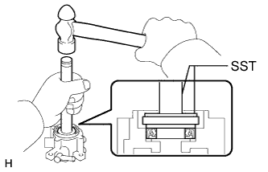
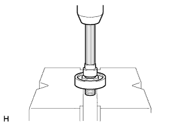

ВАКУУМНЫЙ НАСОС (для моделей с 5L-E) > ПОВТОРНАЯ СБОРКА |
| 1. УСТАНОВИТЕ САЛЬНИК |
|  |
С помощью SST и молотка установите сальник.
| 2. УСТАНОВИТЕ УПЛОТНИТЕЛЬНОЕ КОЛЬЦО |
Нанесите моторное масло на новое кольцевое уплотнение и установите его на корпус вакуумного насоса.
| 3. УСТАНОВИТЕ ПОДШИПНИК ВАКУУМНОГО НАСОСА |
|  |
С помощью пресса запрессуйте новый подшипник на вал насоса.
| 4. УСТАНОВИТЕ ВАЛ ВАКУУМНОГО НАСОСА |
Установите вал вакуумного насоса и стопорное кольцо в корпус вакуумного насоса.
| 5. УСТАНОВИТЕ ЛОПАСТЬ ВАКУУМНОГО НАСОСА |
Нанесите моторное масло на ротор и 5 новых лопастей вакуумного насоса.
Установите ротор и лопасти насоса закругленными концами наружу.
Закрепите торцевую пластину 2 винтами.
| 6. УСТАНОВИТЕ ТОРЦЕВУЮ КРЫШКУ ВАКУУМНОГО НАСОСА |
Закрепите торцевую крышку 4 винтами.
| 7. УСТАНОВИТЕ ОБРАТНЫЙ ВАКУУМНЫЙ КЛАПАН ТОРМОЗНОЙ СИСТЕМЫ В СБОРЕ |
Зажмите вакуумный насос в тисках, используя мягкие губки. Затем установите новую прокладку и обратный клапан.
| 8. УСТАНОВИТЕ ШТУЦЕР ВАКУУМНОГО ШЛАНГА ВАКУУМНОГО НАСОСА |
Зафиксируйте обратный клапан с помощью SST и закрепите 2 новых прокладки и штуцер вакуумного шланга с помощью болта-штуцера.
| 9. УСТАНОВИТЕ ШКИВ ВАКУУМНОГО НАСОСА |
Закрепите шкив вакуумного насоса с помощью контргайки шкива.